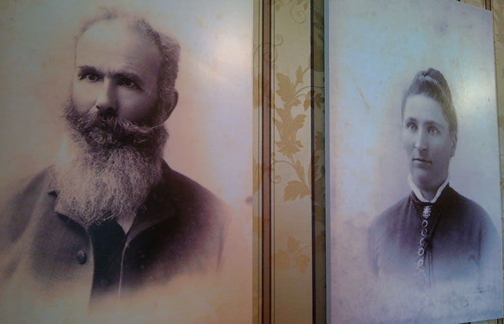

Bernasconi Family
 Bernardo BernasconiBernardo was a Swiss immigrant coming to America by a windjammer (no engine) around Cape Horn in 1859. Once he arrived in California he traveled for many years in search of a place to build. He ended up settling and purchasing 284 acres near what is now Lakeview.
The land ran along the San Jacinto river and was part of a Mexican land grant. He lived in a small, one roomed adobe house which was more than enough for Bernardo’s simple lifestyle. However, once he met Marcellina Orsi (also a swiss immigrant) on a trip to San Francisco, plans changed as Marcellina and Bernardo were happily married in September 1883. Marcellina found Bernardo’s adobe hut not up to par with her comfort needs; therefore, she set out for a better home. The Bernasconi’s were then the owners of a ten room brick house and a pleasant hotel in the city of Perris.
They had six children, Matilda, Felicita, Joseph, Ernest and twins Stella and Edith. They all moved into the hotel as a private residence in 1901, in order to be closer to the schools, as Marcellina thought highly of a good education.
Marcellina BernasconiMarcellina was born in Switzerland, being one of sixteen children. However, at the age of ten years, Marcellina was deprived of a mother’s loving care due to her mother’s death.
This only made her stronger, as being the ambitious woman she was, she came to America, arriving in New York City in 1877. She remained there for approximately a year and a half, and then migrated to San Francisco, joining her older brothers and becoming a governess . She lived in San Francisco for the next four years, and met Bernardo. They fell in love, and the couple married on September 1, 1883.